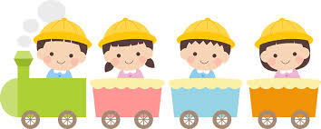

善悪の判断ができ、行動に起こせるつよい子
小さいもの 弱いものを守れるやさしい子
困難なことも逆境の時もあかるく前進できる子
この園目標をモットーにひとりひとりが大切にされていると
感じられる保育を目指しています。
4月〜入園・進学を祝う会
5月〜子どもの日の集い・春の遠足・春の健康診断
6月〜懇談会・こども縁日
10月〜運動会・お店やさんごっこ・いもほり
11月〜七五三・秋の健康診断・懇談会
12月〜クリスマス会・ふれあい給食会
1月〜作品展・鑑賞会
2月〜豆まきの集い
3月〜ひな祭りの集い・思い出昼食会・卒園式・思い出遠足
お誕生会 身体測定 乳児健診 避難訓練
体育指導(3・4・5歳児)リトミック(2・3・4・5歳児)
絵画指導(3・4・5歳児) 英語教室(4・5歳児)
完全給食を行っており、月ごとの献立表をお配りします。
お子様にアレルギーがある場合は、個別に対応しています。
アレルギー調査表のご記入にご協力ください。
練馬区役所本庁舎保育課にて申し込みを受け付けています。
なお、入園の決定は保育の必要性の高い児童から決定となります。
入園申し込み書は例年10月頃から保育課、区内各保育園で配布します。
※詳細は「練馬区ホームページ」または「練馬区保育園入園のしおり」をご覧ください。
練馬区保育情報
練馬区公式ホームページ